Wolfenstein: Enemy Territory 2.60b, now built for couch play.
Split-screen, bots and online play
Splash Damage's 2003 classic, with new ways to play. Up to four players on one screen, Omni-bot squads on every stock map, full controller support and a pad-friendly server browser.
Real footage from this build · 1:44
Mission briefing
*** Top secret ***
Objective: Enemy Territory
The engine, renderer, networking and every original game rule are compiled from the official GPL source. Nothing has been re-imagined: original maps, scripts, classes and objectives stay exactly as Splash Damage shipped them.
On top of that foundation, this build adds what the game never had: local split-screen for up to four players, Omni-bot AI that fills both teams, Xbox controller support with radial wheels and aim assistance, and a portable launcher that runs from a single folder.
Bring your own 2.60b game data, extract the build and play.
01 · Maps and bots
All six stock maps, with their original objectives and scripts
Omni-bots build, plant, defuse and capture on every map, so a full match needs only you.
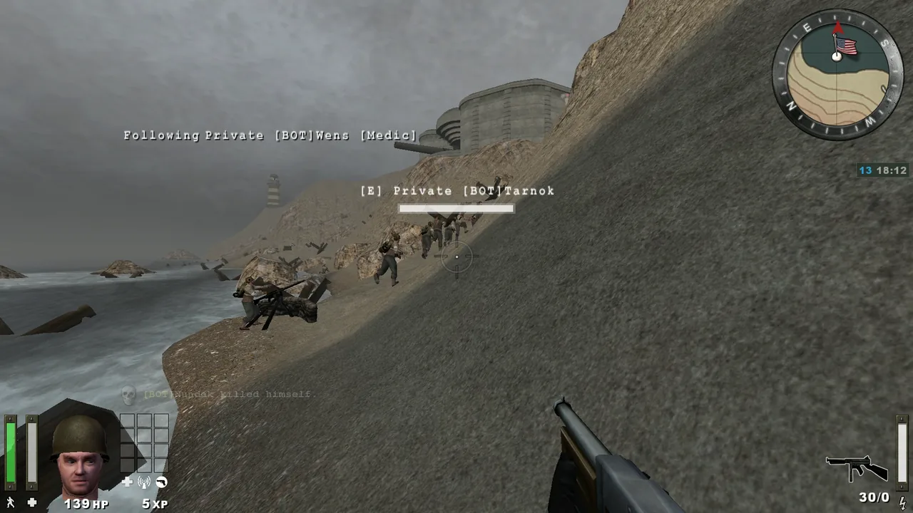
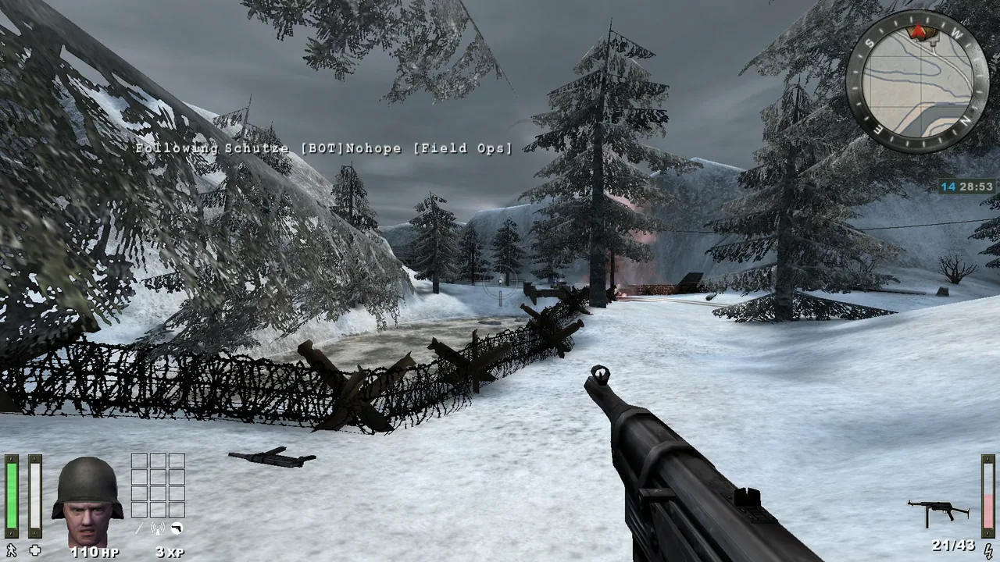
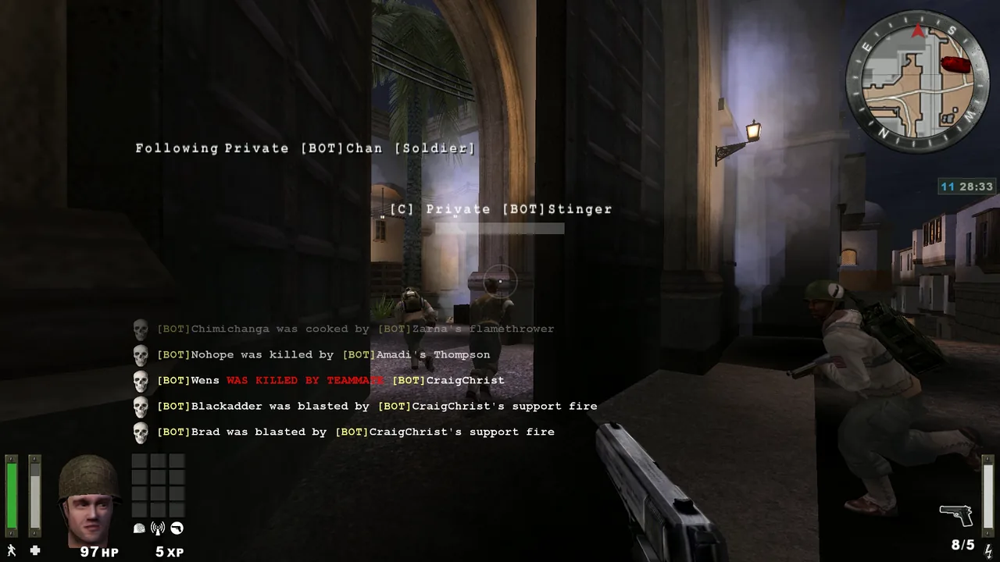
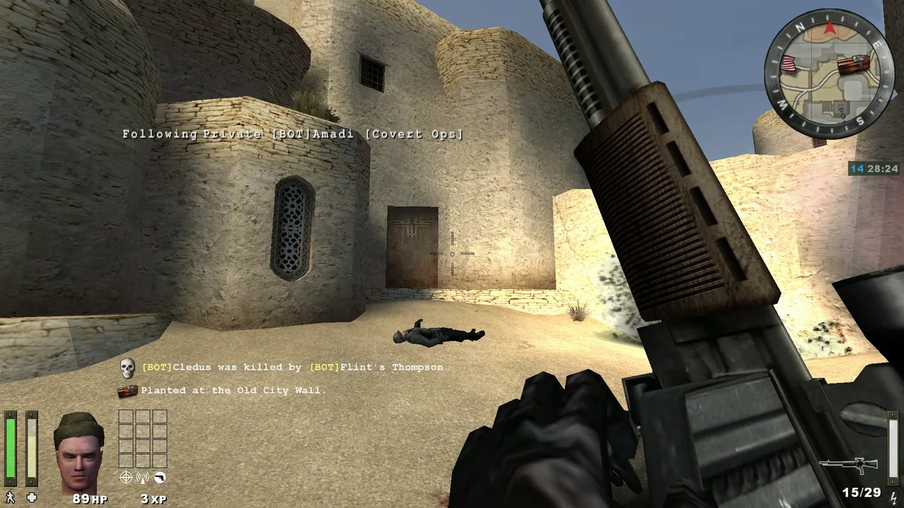
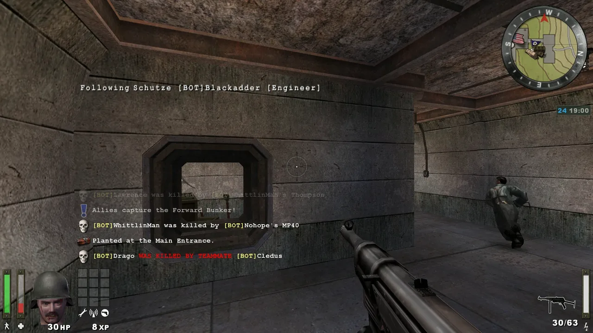
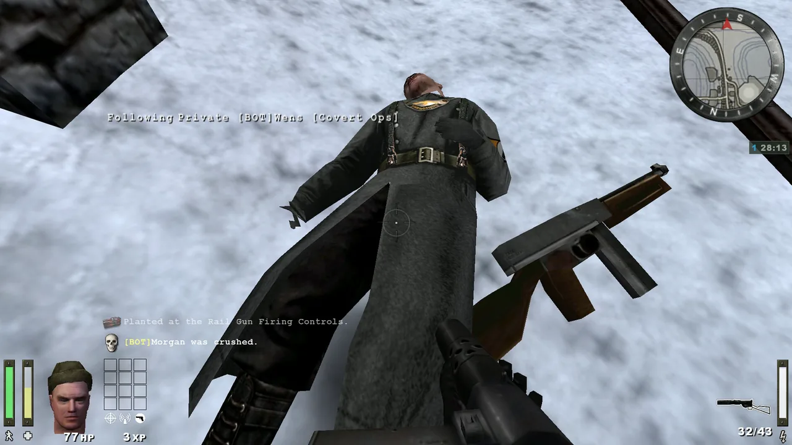
Matches hold 4 to 48 players, humans included. Bots fill the empty slots, rebalance the teams when you switch sides and answer your Medic and Need-ammo calls, with seven difficulty levels.
Original game type and unchanged map scripts. Engineers build and plant, medics revive and field ops resupply. Reinforcement waves and time limits work exactly as in the original game.
With full teams the scoreboard switches to compact rows, so all 48 players are listed in every view and every score arrives intact.
02 · Split-screen
Up to four players on one screen, offline or online
Every player gets their own view, HUD, controller and limbo menu.
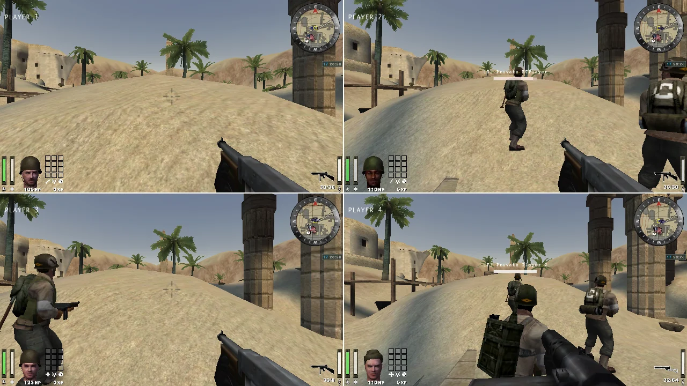
Two players side by side, or three or four in a 2×2 grid. Each player has their own prediction, camera, HUD, recoil and controller: real local play, not duplicated cameras.
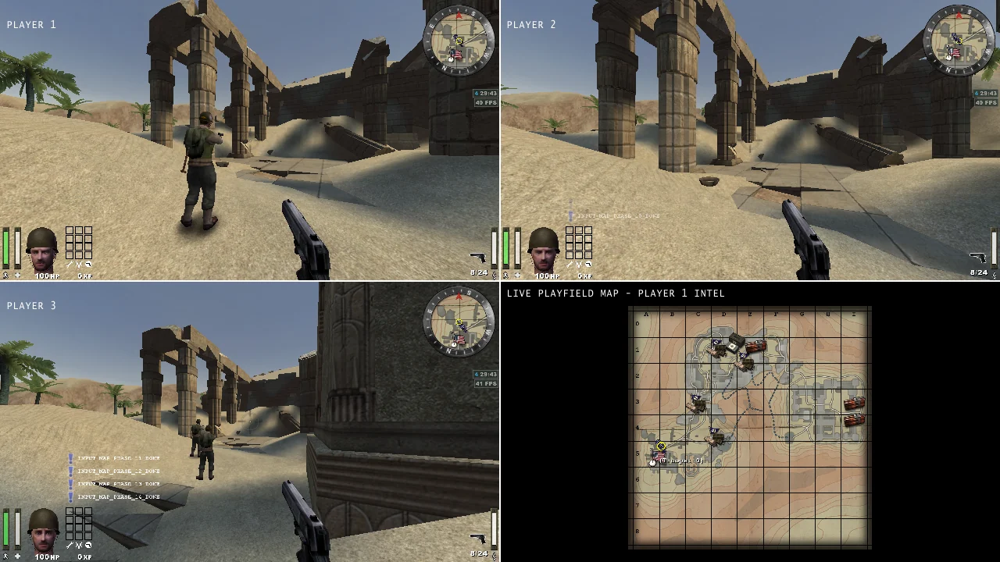
With three players, pane four shows a live view of the whole battlefield.
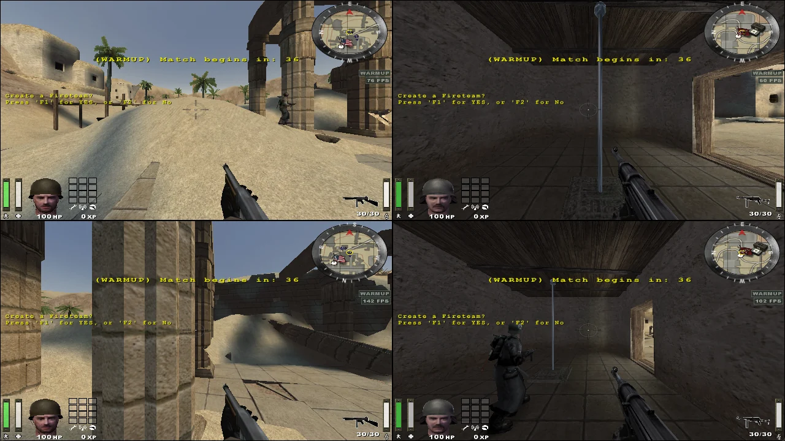
Each view has its own connection, player identity and controller. Server rules always apply.
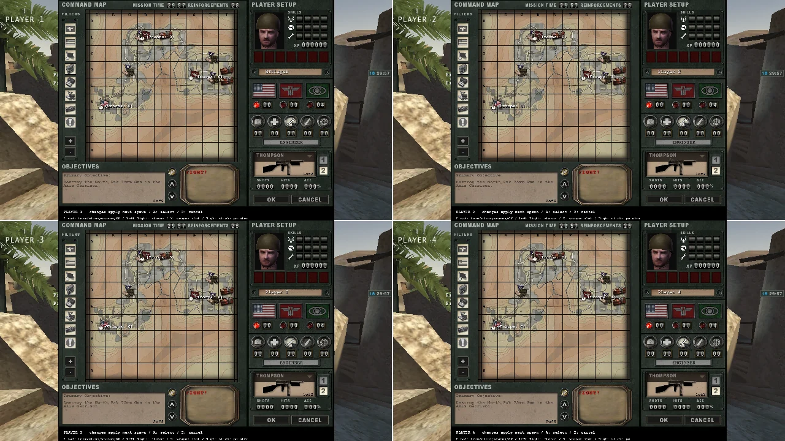
Choose team, class and loadout in your own view while the match keeps running.
03 · Controller
Designed to be played with a controller
Up to four Xbox (XInput) controllers, which can be connected or removed at any time.
Point the stick and release to choose. The wheels are shaped like cartridge-case bases: US brass for the Allies and lacquered steel for the Axis. Call for a medic, engineer, ammo or backup with the original voice lines.
Halo-style slowdown and tracking with six strengths, for controllers only. It never snaps to targets, steers bullets or adds damage. Moving the mouse switches it off immediately.
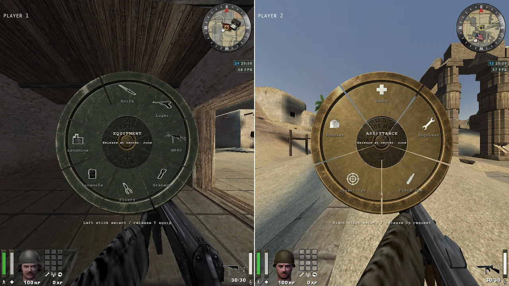
Field manual · Gamepad controls
| Left stick | Move |
|---|---|
| Right stick | Look |
| RT / LT | Fire / Zoom (binoculars) |
| A / B / X | Jump / Crouch / Reload |
| LB / RB | Sprint / Activate |
| Hold Y | Equipment wheel |
| Hold D-pad up | Class assistance wheel |
| D-pad | Alt mode · Prone · Lean |
| Back / Start | Limbo / Match menu |
| L3 / R3 | Scoreboard / Command map |
04 · Interface
New menus in the style of Enemy Territory's original interface
Riveted steel windows, screwed title strips and brass-faced buttons, redrawn for controller navigation.
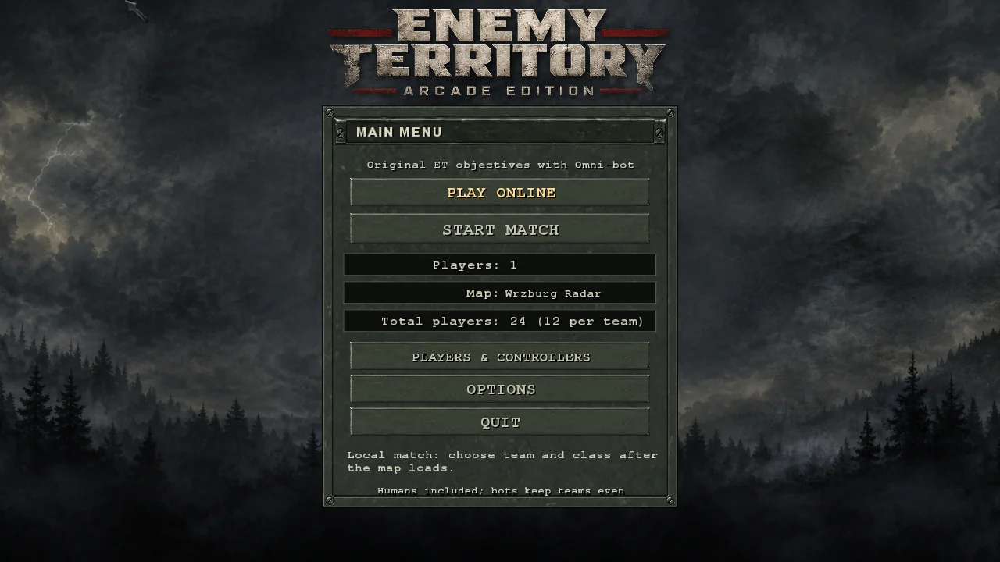
Choose the number of players, the map and the total player count, then start the match.
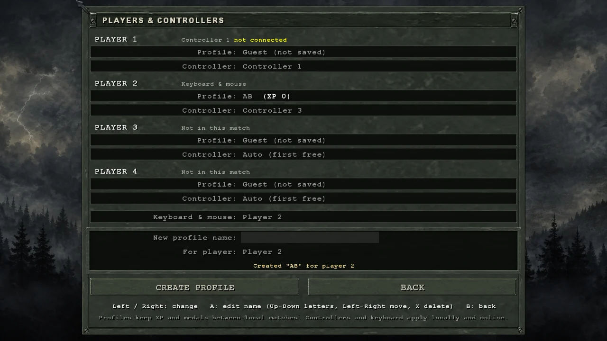
Names, XP and medals are saved for each player. Names can be typed with the controller.
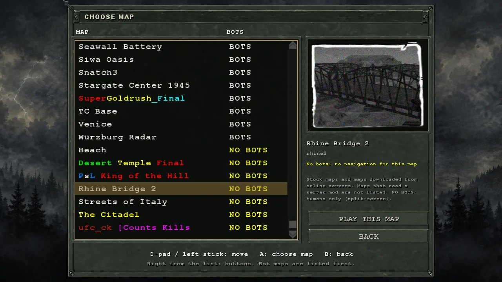
Maps downloaded from online servers appear here, with bundled bot navigation for 682 of them.
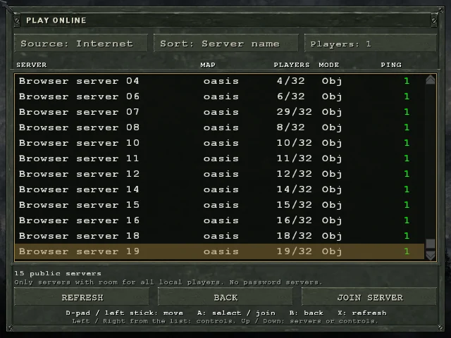
Lists only open servers with enough free slots for everyone on your couch.
05 · Display
Native support for ultrawide and high-refresh displays
Runs at 3440×1440 and 120 Hz with a Hor+ field of view.
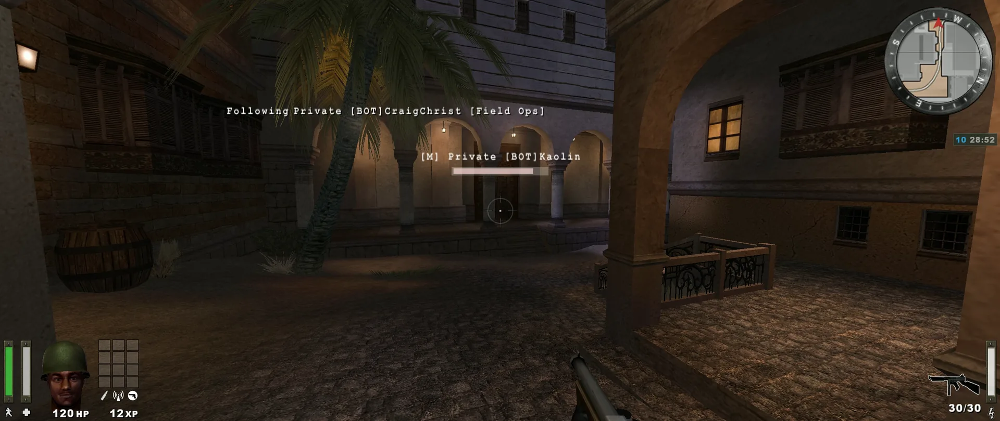
At 21:9 the horizontal field of view widens to about 121.6° while keeping the original vertical coverage. HUD and menus scale without stretching. Full-resolution 32-bit textures with 16× anisotropic filtering.
06 · Download
Get the source or check for portable releases
Build instructions are in the source repository. Original game files are not included: use your own Enemy Territory 2.60b installation.
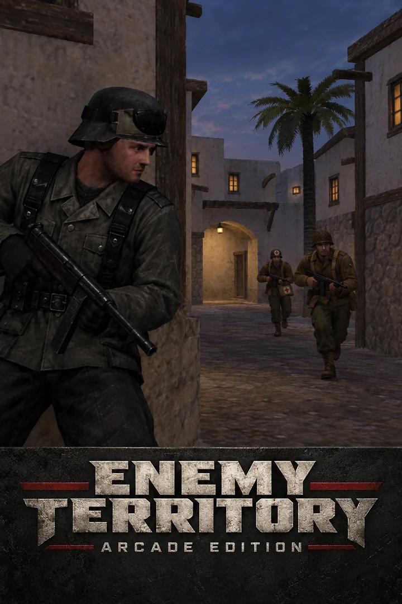
No packaged releases are published yet. Build from source to play.
Windows 8.1 or newer · Xbox / XInput controllers optional · No original game data included
Build from source, or extract a portable release when available. A portable package contains
Play-ET.exe, the engine, the modules and the menus. Local bot matches also need the
Omni-bot runtime. Use a folder you can write to.
On first run, choose your Enemy Territory 2.60b folder. The launcher copies
pak0–pak2 and mp_bin after checking their SHA-256 hashes against the 2.60b release.
Choose Start Match to play against bots, or Play Online to browse servers. Profiles, downloads and your identity stay in the package folder.